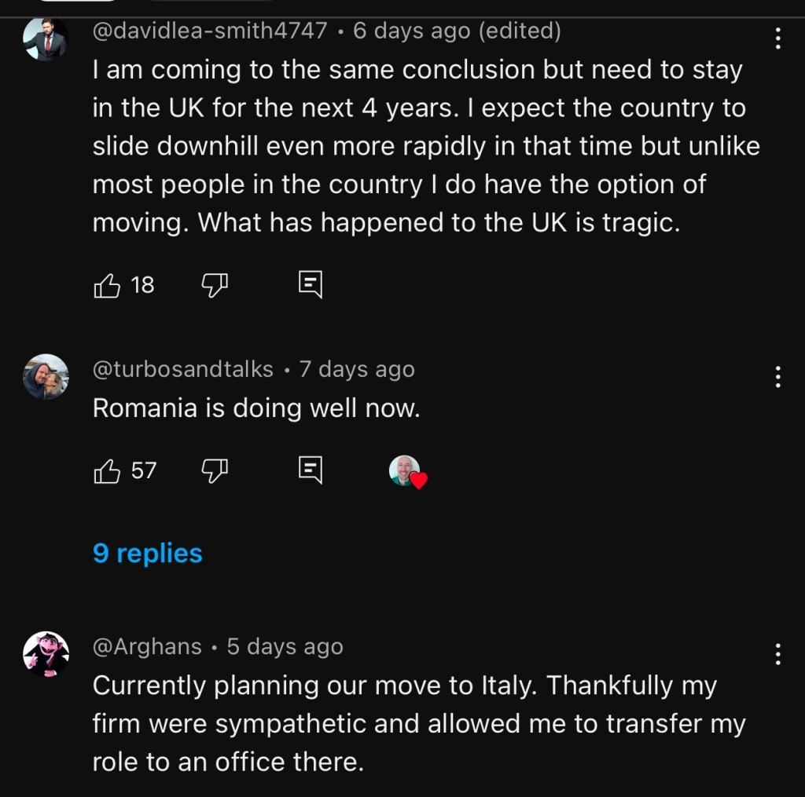

Ir35 and ripple effects
Being right and being wrong at the same tjne
Gpt output
In an economy where millionaire workers leave in increasing numbers year over year, the consequences can be significant and multifaceted, affecting various sectors and demographics. Here’s a breakdown of the potential impacts:
- Reduced Tax Revenue
• High-income earners contribute disproportionately to tax revenues.
• If millionaire workers leave, governments may experience a decline in income tax, capital gains tax, and other revenues.
• This could lead to budget shortfalls and reduce funding for public services like healthcare, education, and infrastructure.
- Brain Drain and Loss of Skills
• Millionaire workers often hold key positions in industries, such as executives, entrepreneurs, or highly skilled professionals.
• Their departure can lead to a loss of expertise, innovation, and leadership.
• Companies may struggle to fill these roles, impacting productivity and growth.
- Impact on Investment and Economic Growth
• Millionaires often invest heavily in local businesses, real estate, and other ventures.
• Their absence may lead to reduced investment activity.
• This can slow economic growth, particularly in sectors reliant on domestic investment.
- Depressed Real Estate Markets
• Wealthy individuals contribute to the demand for high-end real estate.
• If they leave, the luxury property market may experience a downturn, potentially lowering property values in affluent areas.
- Widening Wealth Gap
• If millionaire workers are replaced by lower-income earners or not replaced at all, the overall distribution of wealth in the economy may shift.
• This could exacerbate existing inequalities or create a power vacuum in certain industries.
- Potential Policy Responses
• Governments might respond with policies to retain high earners, such as:
• Tax incentives: Lowering taxes on the wealthy to encourage them to stay.
• Immigration policies: Attracting new high-skilled, wealthy workers to offset the loss.
• Public investment: Improving infrastructure or quality of life to make the country more attractive.
- Long-Term Structural Changes
• Over time, the economy might shift away from sectors dependent on wealthy workers.
• For instance, luxury goods, private schools, or boutique services may decline.
• The labor market may reorient toward industries serving broader income groups.
- Global Competitiveness
• Countries competing for talent may benefit from the departure of millionaire workers.
• This could shift the balance of economic power, with some countries gaining while others lose critical resources.
Mitigation Strategies:
• Retaining Talent: Foster an attractive business environment, improve quality of life, and address wealth disparities to keep millionaire workers engaged.
• Encouraging Local Development: Strengthen support for small businesses and local entrepreneurship to build a more resilient economy less dependent on a few high earners.
The overall impact depends on the scale of the exodus and the specific characteristics of the economy in question. Policymakers would need to act proactively to address the challenges and mitigate potential harm.
Comments

Maybe it is correlation Darly Solice
Different views
Survival kicks in
Imported from rifaterdemsahin.com · 2025